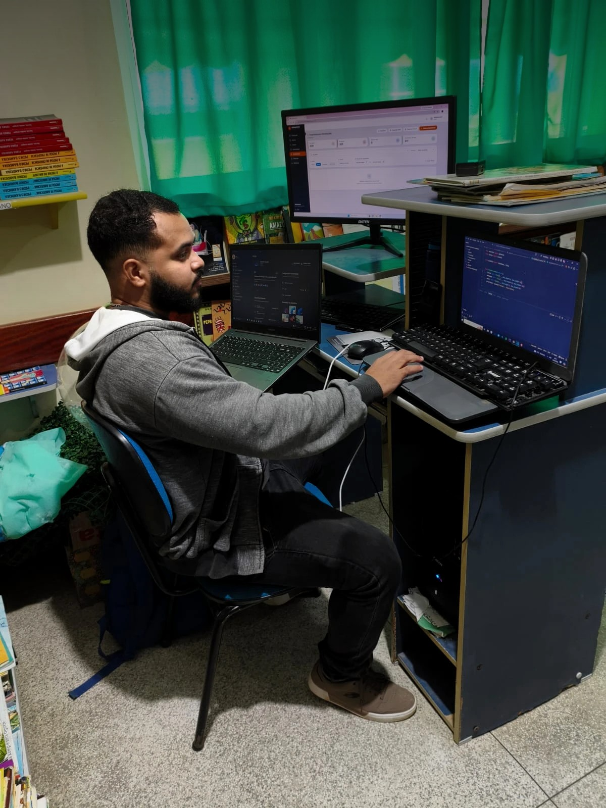

dev full stack
Andrey Oliveira
Entregas
Sobre
Contato
WhatsApp
Andrey Oliveira
DREYODEV
full stack
Faço sites para negócios da
Região dos Lagos
, do desenho ao deploy.
Chamar no WhatsApp
Ver as
entregas